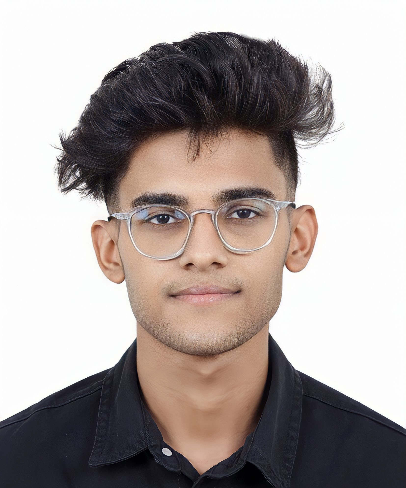

Mohamed Sinan

Objective Statement
I am a hardworking student, passionate and eager to develop my programming skills.
As a current undergraduate student, I am excited to build my portfolio by working on creative projects!
Education
- High School Diploma - GEMS Our Own Indian School, Dubai (2010-2022)
- Bachelor Of Computer Science - University Of Wollongong, Dubai (2022-2025)
Skills
- HTML, CSS and JavaScript - Intermediate
- Java and Object Oriented Programming - Intermediate
- Databases and MySQL - Beginner to Intermediate
- Project Management - Beginner to Intermediate
Certifications
- WISP Program - Winning Team (Under one of my subjects - CSIT114)
- Silver Award For Seminar Pitch (Under one of my subjects - CSIT127)
Contact Me